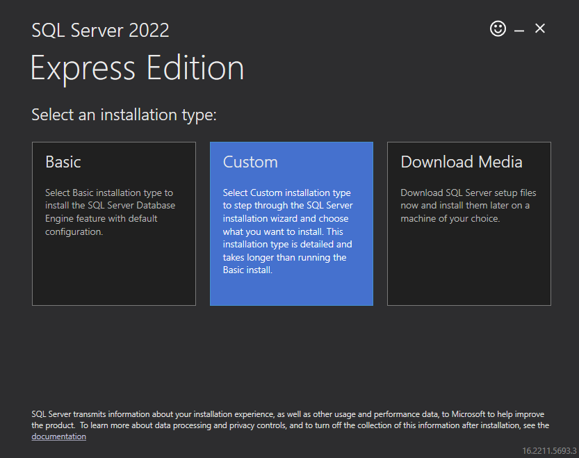
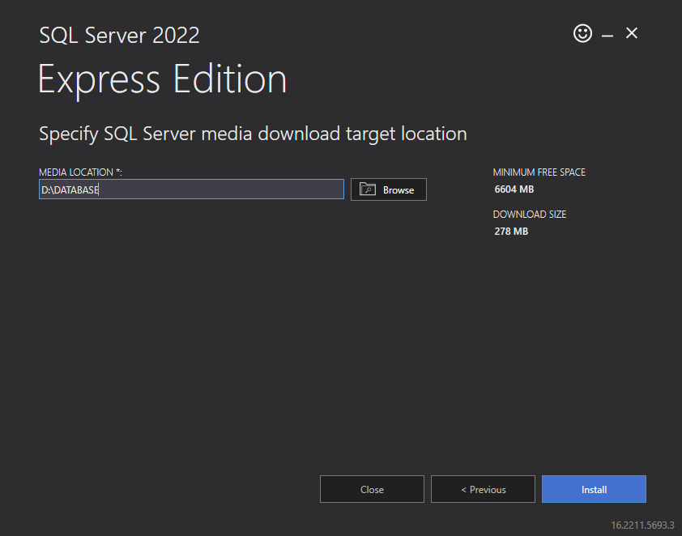
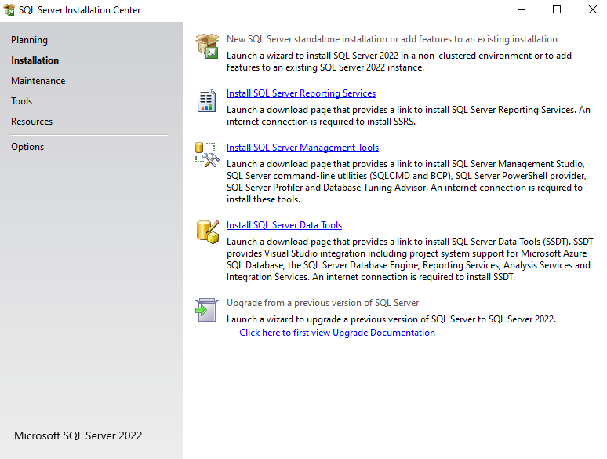

SQl Sever Installation Steps
Download SQL Server Installer
https://www.microsoft.com/en-in/sql-server/sql-server-downloads
Download SSMS
While SSMS downloading, run the Installer application
Installation Steps
1. Select Installation type Custom

2. Create D:/DATABASE and Browse to that folder; Click Install

SQL Server installation center will open up
1. Select New SQL Server standalone installation or Add features to an existing installation

installation
Accept licence terms
x Global Rules
x Microsoft update
x product updates
x Install Setup files
x install rules
Uncheck Azure Extension
Feature Selection - Check Local DB, Browse ‘DATABASE’ folder for ‘Instance root directory’
Instance Configuration - Click Default instance ‘MSSQLSERVER’
Server configuration - SQL Server Browser > Automatic()
If no user add current user
installation complete
close installer
Run SSMS Setup application
Set location to DATABASE
Click Restart
Open SQL Server Management Studio